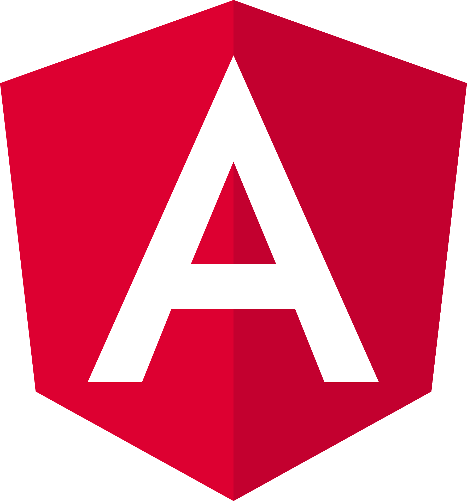

<section class="warper">
    <section class="row landing_bg">
        <article class="col-sm-6 bg-light principal">
            <div class="text-justify">
                <h1>
                    O que é Angular?
                </h1>
                <h6>
                    Este tópico pode ajudá-lo a entender o Angular: o que é Angular, quais as vantagens que ele oferece
                    e o
                    que você
                    pode esperar ao começar a construir seus aplicativos.
                </h6>
                <p>
                    Angular é uma plataforma de desenvolvimento, construída em TypeScript. Como plataforma, o Angular
                    inclui:
                </p>
                <br>

                <ul>
                    <li>
                        Uma estrutura baseada em componentes para a construção de aplicativos web escaláveis,
                        
                    </li>
                    <li>
                        Uma coleção de bibliotecas bem integradas que cobrem uma ampla variedade de recursos, incluindo
                        roteamento,
                        gerenciamento de formulários, comunicação cliente-servidor e muito mais e,
                    </li>
                    <li>
                        Um conjunto de ferramentas de desenvolvedor para ajudá-lo a desenvolver, construir, testar e
                        atualizar seu
                        código.
                    </li>
                </ul>


                <p>

                    Com o Angular, você está aproveitando as vantagens de uma plataforma que pode ser dimensionada de
                    projetos de um
                    único desenvolvedor a aplicativos de nível empresarial.
                </p>
                <p>
                    O Angular foi projetado para tornar a atualização o mais simples possível, portanto, aproveite os
                    desenvolvimentos mais recentes com um mínimo de esforço. O melhor de tudo é que o ecossistema
                    Angular
                    consiste
                    em um grupo diversificado de mais de 1,7 milhão de desenvolvedores, autores de bibliotecas e
                    criadores
                    de
                    conteúdo.
                </p>
            </div>
        </article>
        <article class="col-sm-6 secondario">
            <div class="d-flex align-itens-center">
                
            </div>
           
        </article>
    </section>
</section>
